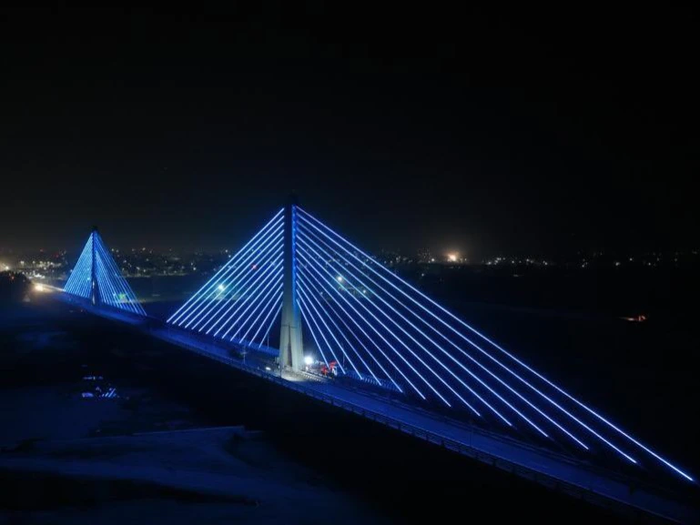

Cable Bridge
The Karimnagar Cable Bridge is an iconic landmark in Karimnagar, known for its architectural design and scenic views. It spans across the Manair River, connecting different parts of the city. The bridge is a popular spot for locals and tourists to enjoy panoramic views of the river and surrounding areas.
Location: Karimnagar, Telangana, India
Activities: Sightseeing, photography, enjoying views of the river
Transportation: Accessible by road, located near major bus routes and the Karimnagar railway station.